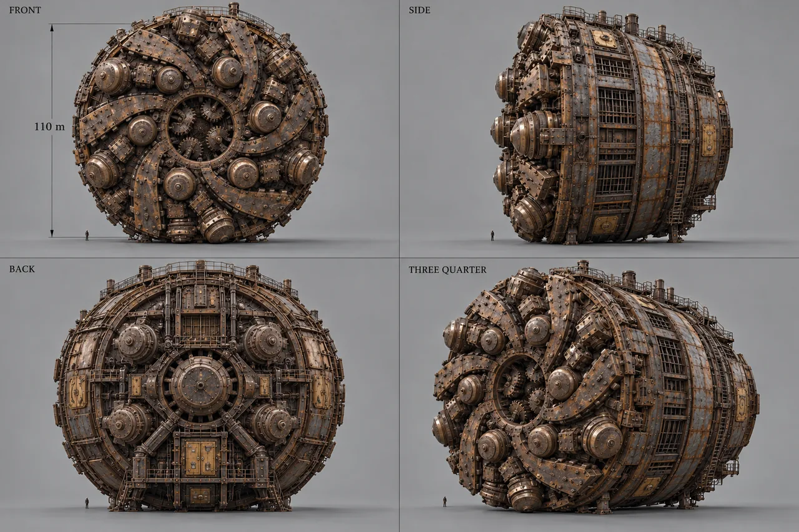
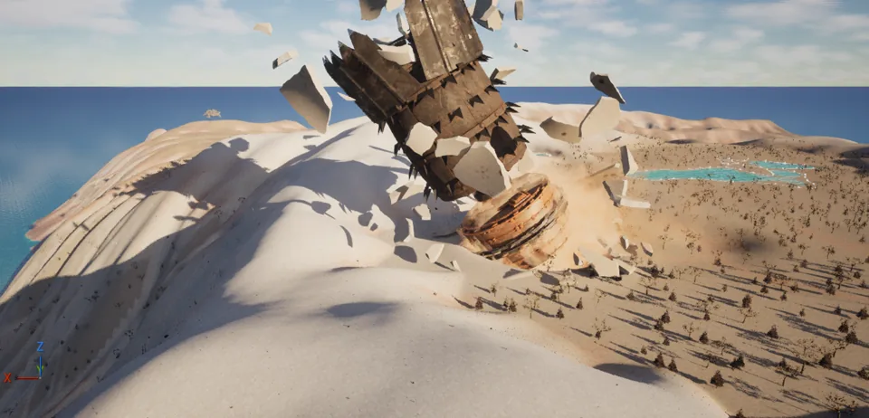
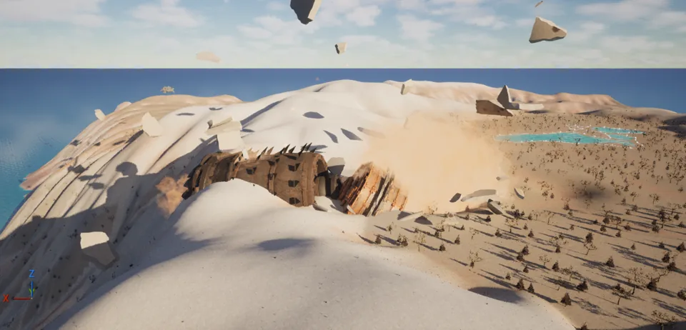
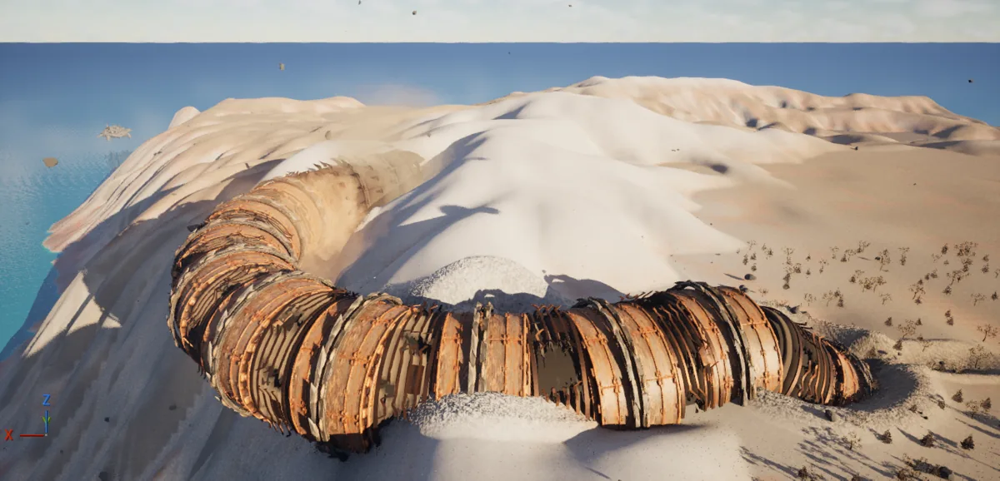

The brief was short: a giant mechanical burrowing enemy that players out run or out smart. On 10 October it got its name. The founder picked the Auger because it is "easy for npc characters to talk about," and a name people can shout across a deck matters when the ground starts to move.
This post covers the five weeks since. We keep our own records with each claim tagged by the evidence behind it, and this is written the same way.
The Shape of It
The numbers we are building to: about a kilometre long, most of it underground, with a head 110 metres tall. Five or six of them on the whole disc. About 36 kilometres an hour underground and 23 on the surface, because once it breaches it has less to grab.
That speed gap is the design. Underground, no Strider out runs it. On the surface a hull at speed can pull away. So getting away is about making it come up, turning it, or pulling it onto a decoy.


A Breach Like a Whale
The direction for the breach was specific. Not shattered rock. The earth should open like a sand hill forming and parting, with the beast breaking out of it fast, tremors first, the sound of it getting near, "almost like a whale breaching the ocean surface."
The first pass ran in the Unreal editor on 10 November on a test stretch of dunes. The ground swells, the head corkscrews out, the machine tips and lands on its belly, and then it swims.



The founder's review, in full: "ok first pass, a lot to improve." He was right, and the list he gave is the work that followed.
What the Review Changed
- The sound. The first grinding take had a high pitched edge that he described as "like change dropping." Nothing about a kilometre of machine should be high pitched. The next pass went lower, with loud, chunky chomps, and came back as "much better."
- The body. It read too short. It now runs as ten segments, and the gaps between them carry ripped, torn accordion joints instead of clean ones.
- The ground. Broken ground has to look like the ground it came from: gravel, earth and rock of that place, never chips. Trees in its path should tip and fall like felled trees.
- The trail. It should leave a trench that stays for five to ten minutes so crews can see where it went and where not to be.


How It Chooses
On 12 November the question changed from how it looks to how it thinks. The founder did not want it running the same loop of track. If two Striders are in front of it, it cannot chase both, so, in his words, maybe it does the "eny meenie minie moe choice."
That became the rule. The Auger tracks targets, picks one by weighted chance, commits to it for a while, then chooses again. He also set what a hit on a Strider means: it goes after a Strider, but it can barely do damage. It nudges the hull, leaves dents, throws sparks and smoke, and may break a drivetrain. People on foot and small vehicles are the ones in real danger.
What exists today: the look of the breach, the body, the fire throat, the trench and the sound, running in the editor on one machine as a first pass.
What does not: the target choice code is written and has not been compiled or tested. The trench is a visual test that only one machine sees. Collecting from the trail, what happens to a player who gets eaten, and whether an Auger can ever be killed are all still open. Nothing here has run on a server with players.
What We're Acting On
- Fix the debris. Rubble that slows down and hangs in the air looks like zero gravity. It has to fall, and fall into the trench.
- Give the trench collision so the wreckage is something you have to drive around.
- Build and test the target choice, on foot and from a Strider.
- Move the trail to the server so every player sees the same scar and the harvest can be real.
The full picture of the Auger, the Colossus and the enemies still in design is on the new Threats page.